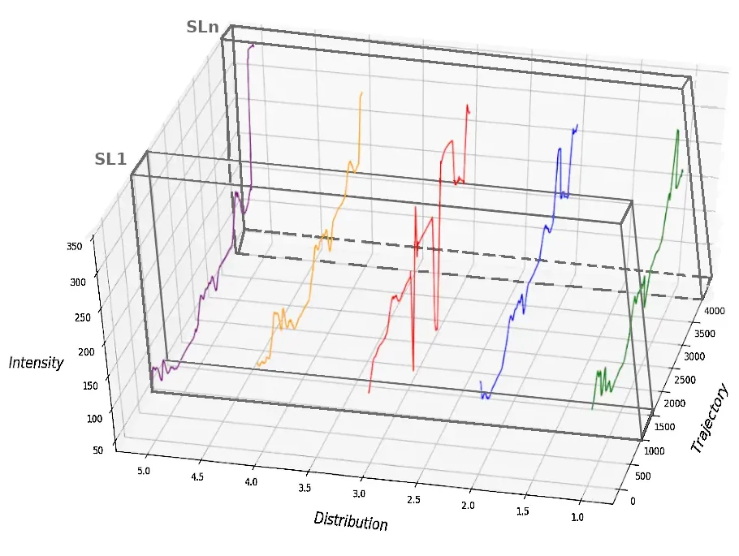
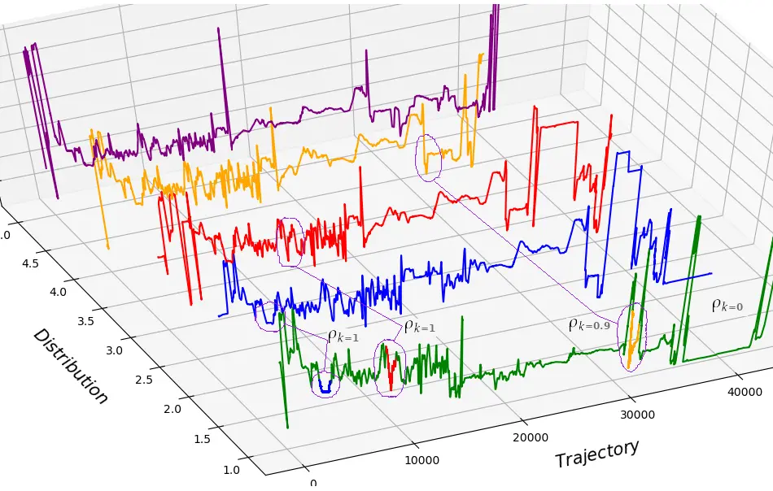

Optimizarea consumului de energie prin anticiparea comportamentului vehiculului într-un mediu dinamic reprezintă un subiect activ de cercetare pentru industria auto.
Deoarece vehiculele sunt echipate din ce în ce mai mult cu sisteme de asistență la conducere care funcționează în condiții dinamice de conducere, o strategie specifică de economisire a energiei trebuie să ia în considerare particularitățile traiectoriei şi să prezică în timp real oportunitățile de economisire a energiei.
Cercetarea şi înțelegerea interacțiunilor dintre formele complexe de intensitate a luminii şi specificitatea spațiotemporală a traiectoriei este principalul obiectiv al cadrului de calcul al intensității luminoase prezentat pentru rețeaua rutieră formată din A1 şi DN7 din munții Carpați.
Sunt incluse locații alternative de pornire şi oprire, între următoarele oraşe majore: Bucureşti, Timişoara, Deva, Sibiu, Piteşti.
Fiecare măsurătoare a segmentului de traiectorie este compusă din diferite segmente definite ca lungimi de segmentare (SL) care caracterizează semnăturile luminoase şi profilul traiectoriei.
Variațiile de intensitate a luminii sunt conținute în tensorul de distribuție a luminii.
Când se analizează valorile măsurate, similitudinile dintre măsurători sunt capturate într-un set de date specific traiectoriei. Această simetrie de distribuție a luminii spațiotemporale este utilizată pentru a prezice evoluția unică a formei luminii virtuale.
Observarea variațiilor de intensitate a luminii oferă o perspectivă unică asupra traseului menționat.
Având un cadru pentru a caracteriza modelele structurale ale semnăturii luminoase pentru traiectorii rutiere specifice, se pot rezolva mai multe probleme din lumea reală, cum ar fi: realizarea unui echilibru energetic optim pentru traiectorii specifice sau estimarea precisă a fenomenelor de intensitate a luminii care pot avea impact asupra interacțiunii dintre vehicul şi mediul de călătorie.
Am folosit ARXDE™ pentru prelucrarea datelor şi imaginilor folosite la realizarea modelelor tridimensionale pentru semnăturile spaţio-temporale a intensităţii luminoase pentru drumurile din Carpaţi.